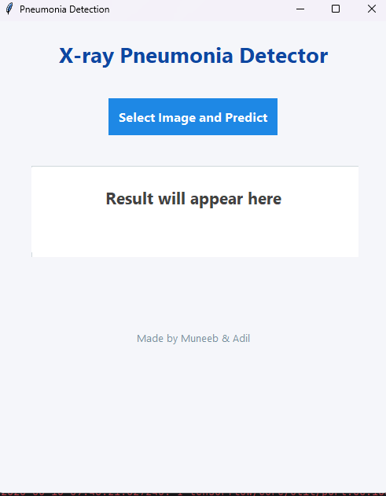

01 / MACHINE LEARNING↗
01 / MACHINE LEARNING↗
HealthPredictorXGB
↗A symptom-based disease prediction prototype using an XGBoost classifier, with a Flask interface and separate training and testing datasets.
I'm Muneeb, a computer science graduate building thoughtful web experiences, exploring applied AI, and creating tools that make learning feel a little more human.
I like the space where technology, design and real people meet.
My background is in computer science, but the work I enjoy most goes beyond writing code. I care about how a product feels, how clearly it communicates, and whether it genuinely helps someone do something better.
That curiosity has taken me from web development and machine-learning experiments to founding Fluentio Academia and teaching German. Different disciplines, one common thread: making complicated things feel approachable.
More about my journey ↗Experiments, applications and products from my GitHub. A mix of web, machine learning, computer vision and education, each built to explore an idea.
01 / MACHINE LEARNING↗
A symptom-based disease prediction prototype using an XGBoost classifier, with a Flask interface and separate training and testing datasets.

02 / DEEP LEARNING↗A desktop image-classification project using MobileNet to classify chest X-rays as normal or pneumonia, with a Tkinter interface and spoken feedback.
 03 / COMPUTER VISION↗
03 / COMPUTER VISION↗
A webcam-based attendance app for registering students, training a recognition model and recording recognised faces to daily CSV files.
A standalone webcam recognition workflow with Haar Cascade detection, face encodings, model training and persistent model storage.
A language academy I founded and built a website for, with course pages, curriculum highlights, enrollment flows and certificate verification.
Visit live website ↗Ready for a little German?
An AI-assisted German learning app concept for short interactive lessons, Goethe and ÖSD preparation, listening and speaking practice.
Visit live website ↗An earlier personal website built to bring my web work, applied machine-learning experiments and teaching work together in one place.
Visit previous portfolio ↗Tools are only useful when they help solve the right problem. These are the areas I've explored through projects, teaching and hands-on work.
HTML, CSS, JavaScript, responsive interfaces, Flask and GitHub Pages.
01 · 04Python, XGBoost, scikit-learn, Pandas, NumPy, CNNs and model experimentation.
05 · 08OpenCV, face detection, face recognition, webcam workflows and image classification.
09 · 12German language teaching, course design, learning experiences and building Fluentio Academia.
13 · 16Fluentio Academia is where my interests in technology and education come together. I founded the academy, teach German, and built its digital home · bringing the learning experience and the platform into one connected project.
Whether it's a project, a collaboration, an opportunity or just a thoughtful conversation, I'd be glad to hear from you.
malakmuneeb9@gmail.com ↗